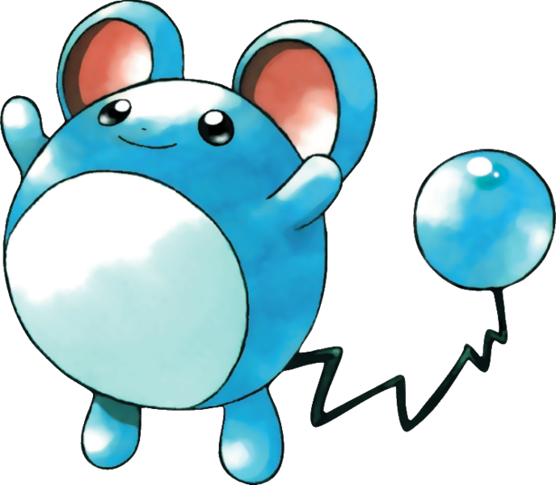

Marill is a small, blue, bipedal semi-aquatic rodent Pokémon. It has a nearly spherical shape with a white belly, and has round ears with red insides. These sensitive ears can detect distant sounds. Marill's arms and feet are short and possess no visible digits. There is a blue, bubble-like ball at the tip of its zigzagging black tail.